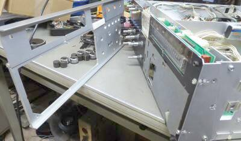
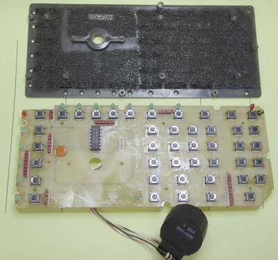
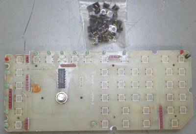
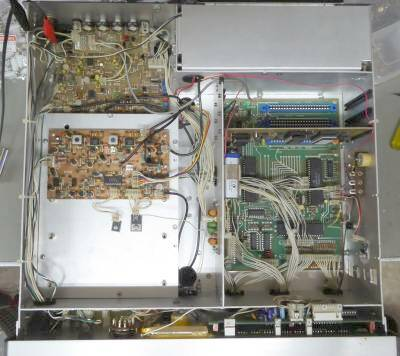
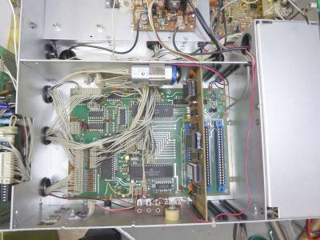
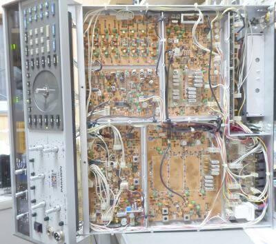

 |
ボタンＳＷにチャタリングが気になるところがあったので交換することにしました
フロントパネルを開けて、ＳＷボード（Ａｓｓｙ）を取り外しました |
 |
フロント面と、ＳＷボードがこのように組み合わされています
緩衝材としてスポンジ（ウレタン風）が使われています
このものが無いと、ちょっとしたことでＳＷボタンがボロボロ脱落してしまいます
余談ながらこのスポンジの素材によって状況が大きく変わります
ボロボロになったりベトベトになったりすると、その本来の機能を失います
国産の無線機においては、特に車載機では良く問題になります
下に見えている黒い物体は、メイン・ダイヤルで回しているロータリー・エンコーダです
メイン・ノブは、アルミの無垢で重量感があります |
 |
交換したボタンＳＷは、４３個
アルプス製品が使われていましたので、同じものを容易に入手することが出来ました
ひとつ交換するもの複数交換するも手間は一緒・・・と言うことで、４３個全て新品と交換しました
左写真は、ＳＷを全て取り去った基板と、取り去った４３個のＳＷ |
 |
本体中身、正面です
下がフロントパネル面です
シャーシは全てアルミで、軽量かつ錆に強く、ＵＳ製品の良いところです
メーター照明
ＬＥＤが使用してありました
あまりに暗い・・・他の写真などではここまで暗くはないと電流制限抵抗を見ると３００Ω・・・６ＶからＬＥＤ２個直列ですので、これはあまりに大きな抵抗値と言うことで、２０Ωに変更しました（この部分の回路が入手できず、オリジナルは？？？） |
 |
上写真の一部をアップしたもの
ＣＰＵボードです
バックアップ電池・・・劣化していた００６Ｐ／９Ｖの二次電池を交換しました
これで電源を完全にＯＦＦにしても、カレンダーがリセットされることはありません
拡張ユニットが刺さるコネクタが右下に２つ見えています
ひとつは、ＦＭオプション、あとひとつは２３２ｃＩ／Ｆオプションの取付場所です
ＰａｒａｇｏｎⅡにおいては、ここには標準でボードが刺さっていることでしょう |
 |
こちらは、本体下部分（シールド板を外して撮影）
Ｔｅｎ－Ｔｅｃお得意の自社製フィルタ
これを見るとＴｅｎ－Ｔｅｃ製品だと！
ＡＭ：６ポール
ＳＳＢ：８ポール ２段
パスバンドチューニングで１６ポールとのカタログ表記も
フィルタは、いずれもシェープ・ファクタ２未満という優秀なものです
オプションとして、狭帯域フィルタ（６．３ＭＨｚ）３本のスペースが用意されています
セクション毎に用意されたユニットが、整然と配置されています
この上に全体を覆おうシールド板が取り付きますので、ユニット毎にきちんとシールドされることになります
フロント・パネルは、ご覧のように簡単に前に倒すことが出来ます（電源ＳＷ、ＭＩＣ、ヘッドフォンジャックの配線には要注意） |
高周波的には、きちんとした設計・・・アルミ板でユニット毎にきちんとシールド・・・市販商品の中にあって、ここまで徹底できている製品ばかりではありません
電源はシビア・・・当たり前と言えば当たり前なのですが、一瞬の電圧低下であってもＣＰＵ動作がＮＧとなります（Ｌｏｃｋしてしまう）
きちんとした電源を用意、これが必須です |
|
Ｔｅｎ-Ｔｅｃらしいというか、独特の使用感、受信が楽しめます
個人的にですが、この使用感は好きです |